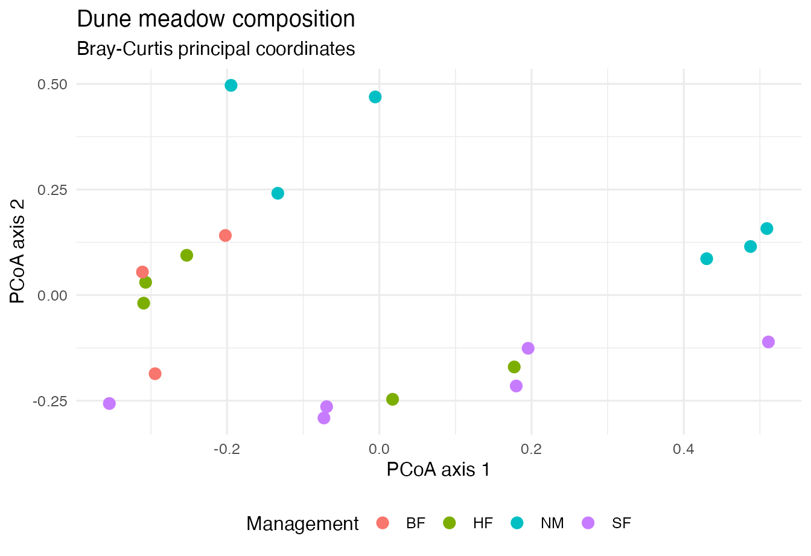

getting-started.Rmddistmer is a framework for distance-based
mixed-effects models with permutational inference. It combines
two ideas that are already familiar to many ecologists:
The formula looks like an lmer() formula, but
distmer is not a likelihood or REML wrapper around
lme4. It works from a dissimilarity matrix. Fixed terms
describe the ecological effects of interest; random terms identify the
experimental units and covariance strata that determine a valid
denominator and permutation action.
This gives two useful reference points:
distmer model
reduces to conventional PERMANOVA;The aim is therefore not to detach the method from PERMANOVA. It is to make distance-based inference feel like a modern mixed-model workflow while keeping the denominator and exchangeability assumptions visible.
The vegan::dune data contain plant abundances from 20
dune meadows. We will ask whether community composition differs among
management regimes.
data(dune, dune.env, package = "vegan")
bray <- vegdist(dune, method = "bray")
table(dune.env$Management)
#>
#> BF HF NM SF
#> 3 5 6 6The dissimilarity is placed on the left of the formula, just as the
response would be in lm() or lmer():
fit <- permanova(
bray ~ Management,
data = dune.env,
permutations = 999,
seed = 2026
)
fit$table
#> Source df SS MS Pseudo-F P(perm) P(MC) Unique perms
#> 1 Management 3 1.468592 0.4895306 2.767243 0.004 0.0037 999
#> 2 Residual 16 2.830430 0.1769019 NA NA NA NA
#> 3 Total 19 4.299022 NA NA NA NA NAPseudo-F measures the separation attributable to
management relative to the appropriate residual variation.
P(perm) is the proportion of permitted null rearrangements
at least as extreme as the observed value. P(MC), when
shown, is a separately labelled asymptotic Monte-Carlo reference; the
design-aware permutation result remains the primary inference.
An ordination is a useful companion to the model, but it is not the response being fitted. The test uses the complete dissimilarity matrix rather than only the two displayed axes.
points <- as.data.frame(cmdscale(bray, k = 2))
names(points) <- c("Axis1", "Axis2")
points$Management <- dune.env$Management
ggplot(points, aes(Axis1, Axis2, colour = Management)) +
geom_point(size = 3) +
labs(
title = "Dune meadow composition",
subtitle = "Bray-Curtis principal coordinates",
x = "PCoA axis 1", y = "PCoA axis 2"
) +
theme(legend.position = "bottom")
For this fixed one-factor model, the observed statistic agrees with
vegan::adonis2():
vegan_fit <- adonis2(bray ~ Management, data = dune.env, permutations = 0)
c(
distmer = fit$table$`Pseudo-F`[1],
vegan = vegan_fit$F[1]
)
#> distmer vegan
#> 2.767243 2.767243For every supplied dissimilarity matrix
,
distmer forms the same double-centred matrix
The operation is fixed, but the resulting geometry depends on the
chosen dissimilarity. Bray–Curtis emphasises abundance composition;
Jaccard applied to presence–absence data emphasises occurrence;
Euclidean distance retains ordinary coordinate geometry. A non-Euclidean
dissimilarity can produce negative eigenvalues. distmer
retains that signed geometry and reports it rather than silently
deleting axes.
Changing the dissimilarity therefore changes the scientific estimand, not just a software option. Record the transformation, standardisation, dissimilarity, and any correction alongside the model formula.
Fixed terms use ordinary R formula notation:
bray ~ management
bray ~ management + moisture
bray ~ management * season
bray ~ management + soil_pHRandom terms describe the sampling design:
bray ~ treatment + (1 | site)
bray ~ treatment + (1 | region/site)
bray ~ period + (1 + period | ditch)The random term must correspond to the unit that was independently
assigned, sampled, blocked, or followed through time. Adding
(1 | site) merely because there is a site
column does not repair pseudoreplication; it must represent the real
design.
The remaining vignettes follow that workflow:
vignette("fixed-effects"): Type I, II, and III
fixed-effect questions.vignette("contrasts"): planned contrasts, pairwise
comparisons, and multiplicity control.vignette("dispersion"): distance diagnostics and
multivariate dispersion.vignette("unbalanced-mixed"): unequal cells and unequal
replication.vignette("random-effects"): random intercepts, nesting,
blocks, and random slopes, including how permanova()
represents them internally.vignette("validation"): reproducible analyses and
independent checks.Unsupported structures stop with an explanation instead of borrowing a convenient denominator or unrestricted permutation. That refusal is part of the statistical model, not an inconvenience to work around.